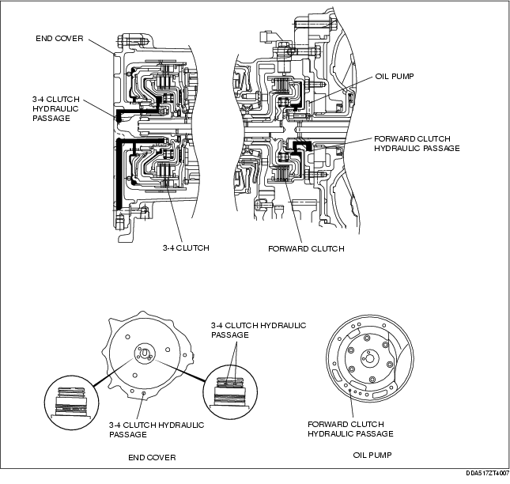

FORWARD CLUTCH, 3-4 CLUTCH HYDRAULIC CIRCUIT OUTLINE [FN4A-EL]
id0517a1003300
• By designing exclusive passages for the forward clutch and the 3-4 clutch in the transaxle case, via the oil pump and end cover the hydraulic pressure passages are shortened and control during clutch engagement is improved.
